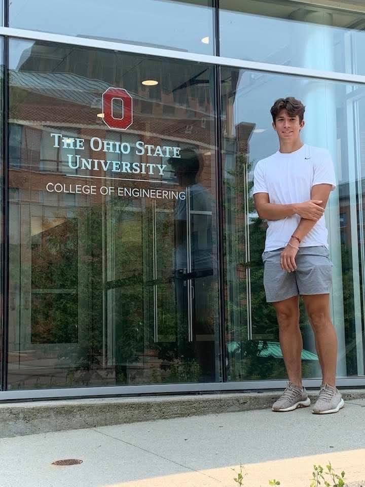
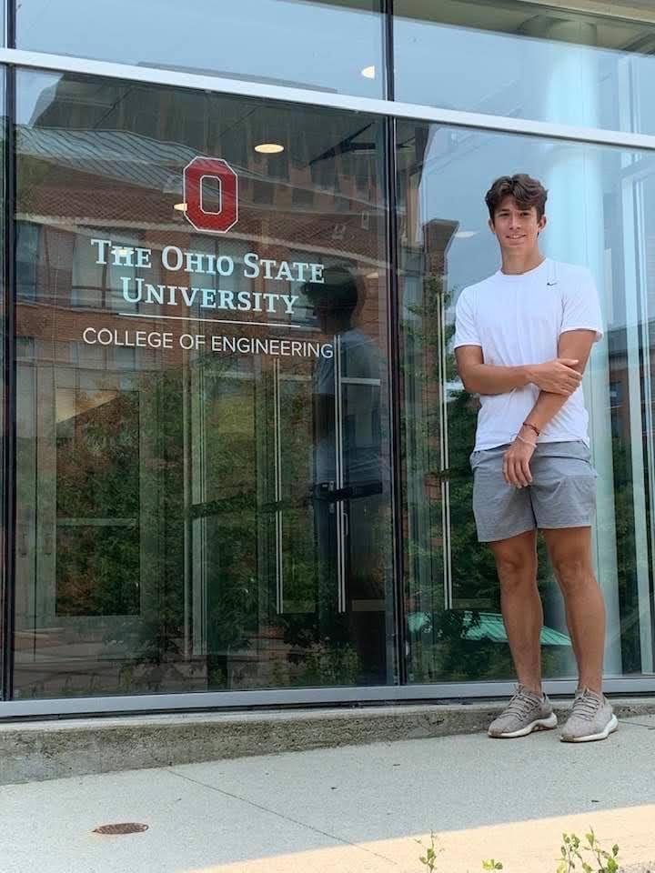

Ryan Tussing.
Hi! This website is a project of mine and a portfolio for some of my work and experience. I am currently an undergraduate at The Ohio State University , and I'm a part of the Computer Science and Engineering program. My expected graduation date is May 2025 . Some of my biggest passions are playing games with friends, club and pick-up soccer, and reading books. I'm passionate about learning new skills, which is one of the biggest inspirations for this website. Below are some pictures of me and my family, and I hope that this website helps you get to know me.
 
